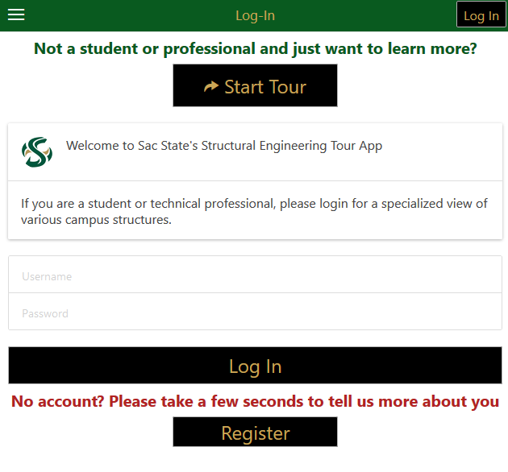

Welcome to the Civil Engineering tour app
This manual will provide some guidance for navigating and understanding the different features.
-
Introduction
The purpose of this app is to allow you to explore the various structures around campus that you've been learning about in your engineering classes.
-
Registration and Your Account
The first thing you'll see when visiting the app is the registration/log in page. The app is able to keep track of who you are and customize your experience based on this information, along with tracking statistics about your usage.
Enter your name and a password for your account, and then select to either log in to the existing account or create a new one with this information. If you'd prefer you can also skip this step and jump straight to the tour selection page without logging in.
-
Page Navigation

At the bottom of the page you should see three navigation tabs that will take you to the different main navigation pages.
-
Selecting a Tour

After the log in page you will be prompted to select the particular tour you would like to go on. This will filter what tour stops will appear on the map page as clickable markers.
-
Exploring All Tours

The tab labeled "Tours" can be found at the bottom of the home page. This section of the app allows you to manually explore all stops for any tour without needing to click them individually on the map.
-
Exploring Site Quizzes

The tab labeled "Quizzes" brings you to a page similar to the "Tours" tab. Here you will be able to manually explore all sites and the quizzes linked to each stop.
-
Map Markers

Once a tour is begun you will be brought to the most important page of the app: the map. Multiple markers should appear on the map, showing the important points of the current tour. The marker marked with an asterisk(*) is your current position and will be updated as you move according to your device's GPS signal.

The other markers on the map represent the stops that make up your current tour. Unlike the marker for your current position, these markers are clickable and will open a popup window when activated. This window displays links to the quizzes and the detailed information pages for that particular site.
A blue line with be drawn that leads you from your current position to the current tour stop, which can be changed through a pair of buttons at the top of the page.
-
Advancing the Tour
At the top right corner of the map you will see two buttons, which control your current stop on your tour. Clicking next will change the directions and lead you to the next tour stop on your current tour.
When you reach the end of your tour, a new popup window will appear in the center of the page. It will contain two buttons prompting you to either return to the map or choose a different tour. A link to a feedback survey will also be shown allowing you to comment on your experience with the app.
-
Detailed Tour Stop

This is the detailed stop page and can be found for every tour stop. It displays images of the structure, detailed information/specs, and a link to any quizzes linked to the stop.
-
Additional Links

The green banner at the top of the app will display different buttons based on where you are in the app. At the Home page it will appear as three white lines, which will open a side menu with additional links to resources and documentation. When navigating the app this spot will be occupied by a Previous link that will take you to the page last visited.